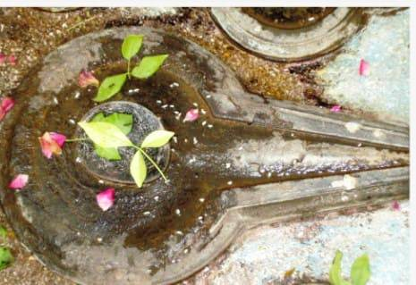

<?xml version="1.0" encoding="UTF-8"?><rss version="2.0"
	xmlns:content="http://purl.org/rss/1.0/modules/content/"
	xmlns:wfw="http://wellformedweb.org/CommentAPI/"
	xmlns:dc="http://purl.org/dc/elements/1.1/"
	xmlns:atom="http://www.w3.org/2005/Atom"
	xmlns:sy="http://purl.org/rss/1.0/modules/syndication/"
	xmlns:slash="http://purl.org/rss/1.0/modules/slash/"
	>

<channel>
	<title>Vamadeveshwar &#8211; Varanasi Temples</title>
	<atom:link href="index.html" rel="self" type="application/rss+xml" />
	<link>../../../../../index.html</link>
	<description>Temples of Varanasi as referred to in Kashi Khand</description>
	<lastBuildDate>Thu, 19 Jun 2025 05:16:46 +0000</lastBuildDate>
	<language>en-US</language>
	<sy:updatePeriod>hourly</sy:updatePeriod>
	<sy:updateFrequency>1</sy:updateFrequency>
	<generator>https://wordpress.org/?v=4.6.29</generator>
	<item>
		<title>VAMADEVESHWAR</title>
		<link>../../../../../shiva-temples/vamadeveshwar/index.html</link>
		<pubDate>Tue, 11 May 2010 07:05:39 +0000</pubDate>
		<dc:creator><![CDATA[admin]]></dc:creator>
				<category><![CDATA[Other Shiva Temples (S-Y)]]></category>
		<category><![CDATA[Shiva Temples]]></category>
		<category><![CDATA[Vamadeveshwar]]></category>
		<category><![CDATA[sankata]]></category>

		<guid isPermaLink="false">../../../../../p=478.html</guid>
		<description><![CDATA[Kashi Khand Chapter 100 describes various places of worship and various types of religious tours which should be undertaken by devotees. (VAMADEVESHWAR) According to Kashi Khand devotees should undertake Antargrihi Yatra daily whereby they have to worship various deities. &#8212;&#8212;&#8212;&#8212;&#8212;&#8212;&#8212;&#8212;&#8212;&#8212;&#8212;&#8212;&#8212;&#8212;&#8212;&#8212;&#8212;&#8212;&#8212;&#8212;&#8212;&#8212;&#8212;&#8212;&#8212;&#8212;&#8212;&#8212;&#8212;&#8212;&#8212;&#8212;&#8212;&#8212;&#8212;&#8211; KASHI KHAND CHAPTER 100, SHLOK 87 &#160; वसिष्ठवामदेवौ च मूर्तिरूपधरावुभौ दृष्टव्यौ यत्नत: काश्यां महाविघ्नविनाशिनौ &#160; [&#8230;]]]></description>
				<content:encoded><![CDATA[<p>Kashi Khand Chapter 100 describes various places of worship and various types of religious tours which should be undertaken by devotees.</p>
<p></p>
<p style="text-align: center;"><strong>(VAMADEVESHWAR)</strong></p>
<p>According to Kashi Khand devotees should undertake Antargrihi Yatra daily whereby they have to worship various deities.</p>
<p>&#8212;&#8212;&#8212;&#8212;&#8212;&#8212;&#8212;&#8212;&#8212;&#8212;&#8212;&#8212;&#8212;&#8212;&#8212;&#8212;&#8212;&#8212;&#8212;&#8212;&#8212;&#8212;&#8212;&#8212;&#8212;&#8212;&#8212;&#8212;&#8212;&#8212;&#8212;&#8212;&#8212;&#8212;&#8212;&#8211;</p>
<p><span style="text-decoration: underline;"><strong>KASHI KHAND CHAPTER 100, SHLOK 87</strong></span></p>
<p>&nbsp;</p>
<p><strong>वसिष्ठवामदेवौ च मूर्तिरूपधरावुभौ </strong></p>
<p><strong>दृष्टव्यौ यत्नत: काश्यां महाविघ्नविनाशिनौ</strong></p>
<p>&nbsp;</p>
<p><strong>Vasishtha and Vamdev  (rishis) have assumed the form </strong><strong>of idols (shiv lings) and drive away the biggest obstacles </strong><strong>in Kashi, so it is appropriate to take efforts </strong><strong>to worship these lings.</strong></p>
<p>&nbsp;</p>
<hr />
<p>&nbsp;</p>
<p><strong><span style="text-decoration: underline;">LOCATION OF VAMADEVESHWAR</span></strong></p>
<p>Vamadeveshwar is located at Ck.7/161, Sankata Ghat. People can travel upto Chowk by rickshaw and walk upto this place by foot via Sankata Devi temple which is a famous landmark.  Alternatively, they can take a boat ride upto Sankata Ghat and walk up the steps.</p>
<p>&nbsp;</p>
<p><strong>Please watch our YouTube Video about Vamadeveshwar at following Link</strong></p>
<p>&nbsp;</p>
<p><a href="https://www.youtube.com/watch?v=JT9nJF6YNjE&amp;t=8s">https://www.youtube.com/watch?v=JT9nJF6YNjE&amp;t=8s</a></p>
<p>&nbsp;</p>
<p><strong><span style="text-decoration: underline;">TYPES OF POOJA</span></strong></p>
<p>The place is open for worship throughout.</p>
]]></content:encoded>
			</item>
	</channel>
</rss>
